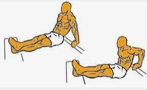

Daniel Abellán Medina
Te podrás en forma desde casa con estos consejos y ejercicios
Algunos de los problemas más habituales que se dan en la personas que se quieren poner en forma es que no saben cómo empezar o qué ejercicios tienen que hacer, ya que hay distintos tipos de ejercicios acordes a los objetivos personales de cada persona. Yo estoy haciendo esto para ponerle solución a ese problema, ya que a partir de ahora, en esta pagina encontrarás todo lo que necesitas saber para comenzar con tu plan de entrenamientos.
En esta página encontrarás planes de entrenamiento que podrás personalizar a tu gusto. Los tipos de entrenamientos que podrás ver en esta página son:
- Perder Peso
- Ponte Fuerte
- Ponerse en Forma
Pierde Peso
El objetivo de la mayoría de personas es el de perder peso, pero estos no entienden lo que hacen y por qué hacen lo que hacen. Por este motivo, yo os lo voy a explicar, ya que considero muy importante entender lo que ocurre en nuestro cuerpo para poder obtener un mejor rendimiento al utilizarlo a nuestro favor.
En el proceso de perdida de grasa lo que ocurre es que la grasa que nosotros queremos perder se convierte en dióxido de carbono y agua mediante el ejercicio. El dióxido de Carbono lo exhalamos a fuera de nuestro organismo y el agua lo expulsamos mediante el sudor o la orina. sin embargo, nosotros también ingerimos grasas nuevas durante las comidas, por lo que debemos tenerlo en cuenta y no ser impacientes ya que esto lleva mucho tiempo hasta que se noten los resultados.
¿Como puedo quemar grasa rápidamente?
El método mas útil y el cual presenta los mejores resultados es la realización de ejercicio físico, especialmente cardio, acompañado de una dieta equilibrada en la cual se reducen los hidratos de carbono, sin quitarlos de la dieta ya que son muy importantes. lo que tratamos de lograr con esto es reducir las calorías que consumimos y aumentar las que gastamos, de forma que se produzca un deficit de calorías, que hará que perdamos peso.
algunos de los ejercicios mas útiles durante el proceso de perdida de peso son los siguientes:
- Carrera Continua

Este ejercicio se basa esencialmente en correr a un ritmo que nos permita aguantar grandes periodos de tiempo, de forma que nuestro cuerpo gane en resistencia.
La duración de este ejercicio debe ir acorde a su nivel y a su resistencia, aunque es aconsejable un mínimo de 15 minutos.
- Burpees

En este ejercicio lo que se hace es realizar un salto e inmediatamente después bajar al suelo y colocarse en posición de flexión. La dificultad del ejercicio se encuentra en que hay que realizar un gran número de repeticiones durante un periodo de tiempo relativamente largo, haciendo que se cree un esfuerzo aeróbico con el que se perderá grasa.
Este ejercicio se puede realizar con un objetivo de repeticiones o con un objetivo de tiempo, lo que prefieran.
- Salto a la comba

En este ejercicio lo que hay que hacer es saltar pasando por encima de la comba, de forma que se requiera una cierta coordinación para ser capaz de mover la comba y de saltarla a la vez. Este esfuerzo se repetirá durante 5-10 minutos. Este ejercicio, al igual que los anteriores, supone un esfuerzo aeróbico grande, lo que provocara una alta perdida de grasas y mucho cansancio.
- Bicicleta (tanto estática como en movimiento)
En este ejercicio lo único que hay que hacer es pedalear sobre la bici (estática o no, es igual) durante un periodo de tiempo largo (superior a 15 minutos). Al realizar el ejercicio durante un periodo largo de tiempo, la exigencia será mayor provocando un mayor esfuerzo aeróbico.
- Rodillas arriba

Este ejercicio consiste en simular la carrera en estático pero levantando bien las rodillas, de forma que se genere un gran rango de movimiento y aumente el esfuerzo aeróbico. Los tiempos de este ejercicio pueden variar entre 30 segundos y 1 minuto.
- Escaladores
Este ejercicio consiste en colocarse en posición de flexión y desde esa posición levantar la rodilla hasta la altura del pecho sin alterar la postura del resto del cuerpo (sin balancearse ni subir o bajar la espalda). Este ejercicio se realiza a un ritmo alto, es decir, hay que tratar de realizarlo a máxima velocidad.
Este ejercicio se puede realizar con objetivos de tiempo o con objetivos a repeticiones, no afecta al resultado final.
- Sprints (poca distancia a mucha intensidad)
Este ejercicio consiste en realizar carreras de corto recorrido a gran intensidad. El objetivo es hacer que haya una gran demanda de oxígeno, por lo que los pulmones y el corazón tengan que hacer un esfuerzo mayor. De esta forma se quema mucha grasa al estar realizando un gran esfuerzo aeróbico. El ejercicio se debe realizar a un 80% o más de su capacidad, para que suponga un reto físicamente.
Con todos estos ejercicios podremos quemar grasa de una forma relativamente rápida, ya que en todos estos ejercicios lo que conseguimos es que nuestro pulso se acelere al necesitar que el corazón y los pulmones hagan un esfuerzo para aportar oxígeno a las moléculas. De esta forma, contribuyen al gasto calórico.
Dieta a seguir
La dieta a seguir para perder peso es sencilla, es una dieta equilibrada en la que hay que tratar de reducir los hidratos de carbono (sin eliminarlos por completo de la dieta ya que son necesarios para nuestro cuerpo). Con esto lo que haremos sera reducir las calorias que ingerimos. A partir de aqui, al hacer los ejercicios mostrados anteriormente, lo que haremos sera quemar mas calorias de las que ingerimos, por lo que se producirá un deficit calórico y notaremos como cada vez tenemos menos grasa en nuestro cuerpo.
ES MUY IMPORTANTE COMBINAR LA DIETA CON EL EJERCICIO, YA QUE SI SOLO HACEMOS EL EJERCICIO Y LUEGO NO CONTROLAMOS LA DIETA, NO SOLO NO VEREMOS MEJORÍA SI NO QUE ES POSIBLE QUE GANEMOS PESO.
Otra recomendación es no prohibirse ningun alimento si no que debemos limitarlo, equilibrando la dieta, ya que si nos privamos por completo de un alimento, acabaremos comiendo con ansiedad de estos alimentos.
Ponte Fuerte
Para ponernos fuertes lo que tenemos que hacer es tratar de ganar masa muscular, y para ello debemos realizar grandes esfuerzos en periodos cortos de tiempo. Deben ser series de ejercicios explosivas. Además, deben combinar estos ejercicios con una dieta hipercalórica, es decir, una dieta en la que consumamos mas calorias de las que gastamos. Esto ultimo es muy importante, ya que es necesario que el musculo tenga todas las calorías que exige para crecer. Voy a explicar esto en mayor profundidad:
Cuando se realiza la fase de volumen (fase en la que se trata de ganar masa muscular), es necesario consumir mas calorías de las que gastamos durante el ejercicio. Imaginemos que el musculo para poder crecer necesita 2000 kcal, pero yo solo consumo 1700 kcal. En este supuesto, el musculo no tendría acceso a todas las kcal que necesita para crecer, por lo que no consigue alcanzar su máximo potencial. Si, por el contrario, necesito 2000 kcal y consumo 2200 kcal, el músculo si cuenta con todo lo necesario para crecer, por lo que sí podrá crecer, ganando asi masa muscular.
Es muy importante entender que esto es un proceso largo y que no se va a ganar músculo de un día para otro, por lo que debemos ser pacientes y constantes.
Para ganar masa muscular, es muy importante entrenar los distintos grupos musculares de forma equilibrada, alternando entre los grupos de hombro, espalda, biceps, triceps, pecho, abdomen y piernas. Existe la posibilidad tambien de un entrenamiento en el que se incluyan ejercicios para todos los grupos musculares, pero lo más comun es dedicar un día a 1 o 2 de cada grupo muscular. Estos son algunos de los ejercicios que sirven para ganar masa muscular:
- Espalda
- Remo
En este ejercicio lo que se trabaja son los musculos de la espalda al tirar de un peso hacia nuestra parte de atras. Para realizar este ejercicio necesitaremos una bidón de agua, una botella de detergente... etc, para que sea pesado. Lo que haremos a continuacion será inclinarnos hacia el frente como en la imagen y tirar del bidón hacia arriba. Dependiendo del peso y del esfuerzo que realicen, las repeticiones variarán entre 8 y 15 repeticiones. Si tenemos mancuernas en casa podemos utilizarlas, siempre y cuando no sean demasiado pesadas. Otra manera de realizar este ejercicio es con una mochila y llenarla de libros o paquetes de arroz. Sea cual sea el material que utilicen, la tecnica será la misma en todos los casos.
- Pajaros con Botellas de Agua
En este ejercicio se trabaja la espalda de una manera similar, solo que en esta ocasión en vez de ser un movimiento recto, es un movimiento circular, en el que se contrae la espalda al subir las botellas de agua con los brazos rectos. Como podemos ver en la imagen, debemos inclinar el cuerpo hacia delante como en el ejercicio anterior, solo que ahora el movimiento será circular. El objetivo de este ejercicios es causar un cansancio muscular, ya que el musculo se esfuerza mas cuando está cansado, lo que provoca un mayor crecimiento de este.
para este ejercicio se pueden utilizar botellas de agua, bidones de detergente o mancuernas de poco peso en el caso de que las tengamos en casa. Se realizarán entre 8 y 15 repeticiones, al igual que en el anterior.
- Biceps
- Curl de biceps
En este ejercicio se trabaja el biceps con el ejercicio tradicional, el Curl de Biceps. Este ejercicio lo haremos con botellas, bidones o mancuernas si tenemos. El ejercicio trata de conseguir subir la botella o mancuerna hasta la altura del hombro ayudandonos tan solo del biceps, sin mover codos ni hombros, de forma que esto suponga un esfuerzo extra para el musculo. Dependiendo del peso con el que hagamos el ejercicio, las repeticiones variarán entre 10 y 15 repeticiones. Una variante de este mismo ejercicio es el propio curl pero apoyandonos en un respaldo inclinado como puede ser el de una mecedora o un asiento reclinable, de forma que bloqueemos el codo para evitar moverlo y de esta forma asegurarnos de que estemos haciendolo bien.
- Triceps
- Flexiones en diamante
En este ejercicio debemos ponernos en posicion de flexion y juntar las manos, de forma que hagamos la forma de un diamante con ellas. Esto hará que, al tenerlas juntas, se garantiza un mayor esfuerzo del triceps, provocando un gran cansancio muscular. Lo negativo de este ejercicio es que es un ejercicio duro y muy dificil, por lo que debemos estar familiarizados con las flexiones normales antes de avanzar a las flexiones en diamante. si somos incapaces de hacer estas flexiones, podemos hacer las flexiones normales, que siguen trabajando triceps pero a menor medida. Durante el ejercicio es muy importante mantener el cuerpo recto y no mover la cadera. Deberemos hacer entre 8 y 12 repeticiones.
- Fondos en banco

Para este ejercicio necesitaremos una silla. El ejercicio trata de apoyarnos con las manos sobre el borde de la silla y estirar las piernas hacia delante, tal y como se ve en la imagen. Una vez estamos en la posición de inicio, con los brazos estirados, lo que haremos será bajar lentamente hasta que nuestros brazos formen un angulo de 90 grados. En el momento en el que lleguemos a la postura de la imagen, lo que haremos será estiral los brazos lo más rápido que podamos,volviendo así a la postura inicial. De esta forma haremos trabajar al músculo provocando así un gran esfuerzo por su parte. Debemos realizar entre 10 y 15 repeticiones.
- Pectorales
- Flexiones
Las flexiones son uno de los ejercicios más populares que existen, además, ya hemos hecho flexiiones anteriormente en este plan de entrenamiento, de modo que debemos saber hacerlas. En este caso, son flexiones normales, no en diamante, ya que vamos a tratar de centrarnos en trabajar el pectoral. Lo más importante para trabajar el pectoral es que las manos deben estar un poco más abiertas de la altura de los hombros, formando un angulo de 45 grados. Una vez estamos colocados, lo que haremos será bajar lentamente, apretando pecho para hacerlo trabajar y apretando abdomen para que no se nos curve la espalda, ya que debemos tenerla recta en todo momento. Debemos hacer entre 10 y 15 repeticiones. En caso de que no podamos, las haremos con las rodillas apoyadas una vez que no podamos hacer mas con las piernas estiradas.
- Press Svend
El press Svend es un ejercicio en el que se coge un peso a la altura del pechu, y desde pegado al pecho lo que haremos será estirar los brazos sin bajar los brazos, de forma que el peso vaya en una linea recta (es importante realizar el movimiento lentamente y sin mover los brazos hacia los lados o hacia abajo). Una vez hemos estirado los brazos volveremos lentamente a la posición inicial, tal y como lo vemos en la imagen. Realizaremos entre 8 y 12 repeticiones.
- Abdominales
- Plancha frontal
En este ejercicio lo que vamos a hacer es apoyarnos con los antebrazos y estirar las piernas, levantando el culo hasta llegar a una posicion en la que tengamos la espalda recta, tal y como vemos en la imagen. Es muy importante mantener el cuerpo recto para que los abdominales se activen y logremos que trabajen. Realizaremos entre 30 segundos y 1 minuto.
- Escaladores
Este ejercicio consiste en colocarse en posición de flexión y desde esa posición levantar la rodilla hasta la altura del pecho sin alterar la postura del resto del cuerpo (sin balancearse ni subir o bajar la espalda). Este ejercicio se realiza a un ritmo alto, es decir, hay que tratar de realizarlo a máxima velocidad. Este ejercicio lo haremos con un objetivo de tiempo, y haremos entre 30 y 45 segundos sin parar.
- Pierna
- Sentadillas
En este ejercicio lo que haremos será ponernos depié con los pies a la altura de los hombros y ligeramente abiertos hacia fuera. Una vez estamos colocados en la postura inicial lo que haremos será bajar flexionando las rodillas y manteniendo la espalda recta, sin agachar la espalda. Una vez lleguempos abajo (llegando con el culo por debajo de la altura de las rodillas) lo que haremos será estirar las piernas, de forma que hagamos trabajar al cuadriceps, glúteo e isquiotibiales.
Realizaremos este ejercicio entre 10 y 20 repeticiones.
- Puente de Glúteo con espalda apoyada a una pierna

El puente de glúteo es un ejercicio específico del glúteo. En esta variante lo que haremos será apoyar los hombros en una silla, banco... y apoyarnos en una sola pierna, tal y como vemos en la imagen. Una vez estemos en la posición inicial, lo que haremos será flexionar la cadera lentamente y, una vez lleguemos abajo, subiremos rapidamente, haciendo trabajar al glúteo. Realizaremos entre 10 y 20 repeticiones.